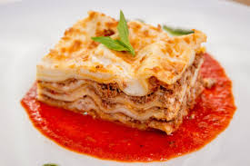

Spaghetti

Million dollar spaghetti is the perfect combination of noodles, lean ground beef sauce, cottage cheese, cream cheese, and sour cream. It's unbelievably good!
This million dollar spaghetti dish features a beefy, creamy tomato sauce that’s impossible to resist.
Ingredients
- Spaghetti
- Beef
- Sauce
- Butter
- Cottage Cheese
- Cheeses
Steps
- Boil the spaghetti in salted water, then drain and set aside.
- Cook the beef on the stove and discard the grease. Transfer to a bowl and mix in the spaghetti sauce.
- MPrepare the baking dish, then spread half of the noodles in the bottom.
- Top with the mixture of cottage cheese, cream cheese, and sour cream.
- Cover with remaining spaghetti and butter.
- >Pour the beef mixture over the spaghetti and spread in an even layer.
- Bake for 30 minutes, top with Cheese, and continue baking until the cheese is melted.